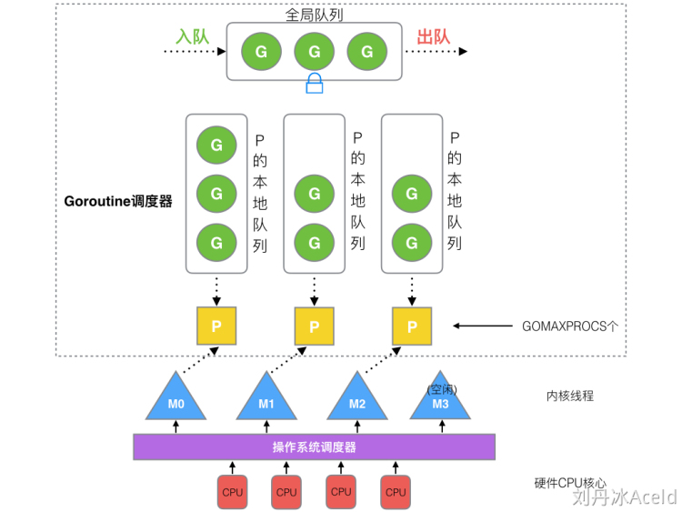
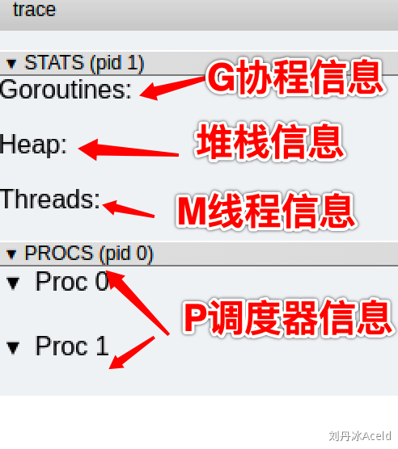

GO 协程调度器 GMP
由来
G: goroutine 协程
M: thread 进程
P: processor 处理器
- 单线程任务：单一流程、进程阻塞
- 多线程：
- 设计复杂
- 进程/线程数量越多，切换成本越大
- 同步竞争：锁、竞争资源冲突
- 壁垒
- 进程内存占用，比如虚拟内存
- 线程内存占用
- 高 CPU 调度消耗
- 设计复杂
- 协程（co-routine）
n:1：无法利用多个 cpu，出现阻塞瓶颈1:1：与多线程无异m:n：过于依赖调度器算法和优化，能利用多核
- 调度器优化：
- goroutine：内存占用小、切换成本低
- 早期调度器：基本的全局 go 队列和比较传统的轮询，利用多个 thread 进行调度
早期调度器弊端
- 创建、销毁、调度 G 都需要每个 M 获取锁，造成激烈的锁竞争
- M 转移 G 会造成延迟和额外的系统负载
- 系统调用（CPU 在 M 之间切换）导致频繁的线程阻塞和取消阻塞操作增加系统开销
模型

- P
- 本地队列：
- 存放等待的 G
- 数量限制：256 个 G
- 新 G 优先放 P 的本地队列，满了采访全局队列
- 列表：
- 程序启动时创建
- 可配置的 GOMAXPROCS
- 修改
$GOMAXPROCS - runtime.GOMAXPROCS()
- 修改
- 本地队列：
- M
- 列表：操作系统调度器分配到当前程序的内核线程数
- 数量：GO 语言限定了 M 最大量为 10000，太多了实际上可忽略
- SetMaxThreads 函数可设置
- 有一个 M 阻塞，就会创建一个新的 M
- 自动空闲回收或者睡眠
策略
复用线程
- work stealing
- P 的本地队列从其他的本地队列偷取 G
- Hand off
- 如果 M 执行的 G 进行阻塞操作，则新建或唤醒一个 M 继承它的本地队列
利用并行
设置GOMAXPROCS 限定 P 的个数
抢占
旧：co-routine 主动释放 CPU
新：goroutine 限定 CPU 占用时间，防止其他 G 被饿死
全局 G 队列
当 work stealing 偷不到东西时，从全局队列获取
go func() 流程
- 创建
- 入局部队列
- 局部已满则入全局
- M 获取 G
- 从全局获取
- work stealing
- 调度
- 执行
- 若发生 syscall 或者阻塞操作
- 创建或休眠队列中获取 M
- 接管当前阻塞 G 的 P
- 时间片超时返回
生命周期
M0
- 启动程序后的编号为 0 的主线程
- 在全局变量
runtime.m0中，不需要在 heap 上分配 - 负责执行初始化创作和启动第一个 G
- 启动第一个 G 之后，M0 就和其他 M 一样了
G0
- 每次启动一个 M，都会直接创建一个 G0
- G0 仅用于负责调度，不指向任何可执行的函数
- 每一个 M 都有一个自己的 G0
- 在调度或系统调用时会使用先清楚 G0 再通过 G0 切换到其他的 G
- M0 的 G0 会放在全局空间
可视化的 GMP
go tool trace
1 | package main |
1 | $ go tool trace trace.out |

Debug trace
1 | package main |
1 | $ go build trace2.go |
1 | $ GODEBUG=schedtrace=1000 ./trace2 |
SCHED：调试信息输出标志字符串，代表本行是 goroutine 调度器的输出；0ms：即从程序启动到输出这行日志的时间；gomaxprocs: P的数量，本例有2个P, 因为默认的P的属性是和cpu核心数量默认一致，当然也可以通过GOMAXPROCS来设置；idleprocs: 处于idle状态的P的数量；通过gomaxprocs和idleprocs的差值，我们就可知道执行go代码的P的数量；- t
hreads: os threads/M的数量，包含scheduler使用的m数量，加上runtime自用的类似sysmon这样的thread的数量； spinningthreads: 处于自旋状态的os thread数量；idlethread: 处于idle状态的os thread的数量；runqueue=0： Scheduler全局队列中G的数量；[0 0]: 分别为2个P的local queue中的G的数量。